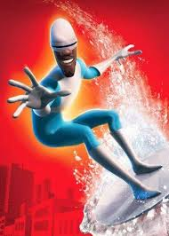

O fundador que transformou a manutenção de ar-condicionado em uma ciência de precisão contra o calor extremo.
Engenheiro Mecânico e Climático (CREA: XXXXXX)
"Onde está meu super-traje? Precisão. Disciplina. Confiança. Essa é a base do Frio Perfeito."
SOLICITAR CONSULTORIARestaurar a climatização para o pico de eficiência, garantindo ar puro e economia energética para enfrentar o clima do MS.
Ser o padrão de excelência em serviços de climatização, onde a palavra "gambiarras" é banida, seguindo a Regra de Edna Mode: "NADA DE CAPAS!" (ou seja, nada de atalhos).
Cada diagnóstico é embasado em dados (pressão, vácuo, temperatura) e nunca em "achismo". Usamos ferramentas calibradas para eliminar o erro humano. A única garantia que precisamos é a precisão do nosso trabalho.
O Mestre Jelado não é apenas um técnico. Ele é um Engenheiro Mecânico certificado, o que significa que ele entende a Termodinâmica Pura, o cálculo de carga térmica, e a mecânica dos fluidos.

Formação em Engenharia Mecânica. Tese pioneira sobre a otimização de sistemas de refrigeração para climas continentais. O futuro Mestre Jelado ganha suas primeiras credenciais.
Lúcio trabalha em projetos industriais complexos na Europa e Ásia, absorvendo o rigor internacional de manutenção, gestão de projetos PMOC e controle de qualidade do ar.
Funda a Fica Frio em Três Lagoas com a promessa de nunca usar achismos e sempre entregar Laudo Técnico. O slogan interno era: "Vamos ser melhores que o Capitão Frio!"
A Fica Frio passa a ser referência em PMOC (Lei 13.589/17), com emissão de ART e relatórios mensais de engenheiro, transformando o "serviço" em "conformidade legal e segurança".
Aquisição do Arsenal Técnico: Manifold Digital, Vacuômetro Eletrônico e Termovisor FLIR. O erro humano foi eliminado. A prova que o Mestre Jelado leva a sério.
Formalização da garantia definitiva: **"Se Não Gelar, Nada se Paga"** e expansão do Plantão 24h. O inimigo (calor) não tem descanso, nós também não.
"Eu pensava que todos os técnicos eram iguais. Mas a Fica Frio usa equipamentos que nem a NASA tem! O Lúcio não conserta, ele *restaura o equilíbrio* do sistema. Gosto da seriedade. Nota 10!"
"O Mestre Jelado conseguiu resolver um problema de vazamento que três outras empresas disseram ser 'impossível'. Ele chegou, olhou e disse: 'Ah, esse é fácil. É só o dreno entupido.' Quase chorei de alívio. Meu super-herói do clima!"